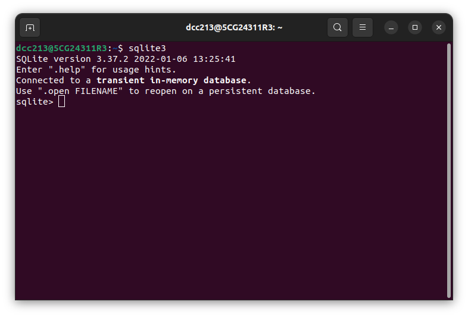
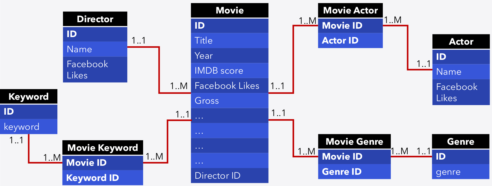

sqlite3 Teaching.db < createTeachingTables.sqlSQL Examples
Following Along with BEE2041 Class Examples
Getting Up and Running…
Installation and Interfaces
There are many popular relational database management systems that run SQL queries such as MySQL, PostgreSQL, SQLite, MS SQL, and Oracle. For this class, we will use SQLite since it is free, open source, robust, and easy to install and setup (no server process configuration is needed). Unlike other RDMBS programs which are implemented as a server process in which programs have to interact with a host server, SQLite allows programs to read from and write to a database disk file. This is very useful for our purposes where we quickly want to get up and running with SQL, and get a hang of the most important concepts!
Most of the queries we write here are standard SQL queries, shared by all programs. However, each program implements their own additional special commands which do not perfectly carry over to other programs. We will note when things are SQLite specific, as this will be relevant if you would prefer to follow along in some other particular implementation of SQL. The main “sqlite” specific statements we will be working with are dot statements. These are commands which are preceded by a . and are specific to sqlite (details are available here). While similar command exist in other SQL implementations, you will need to check the correspondence. If you would like to see a full list of sqlite’s help files, which can be found by simply typing .help without any arguments at the sqlite command line interface.
Please see the “Setup” section on ELE for installation. After you install SQLite (sqlite3), you can try the typing sqlite3 in your bash to see if it is working. If so, you should hopefully see something like the following:

You may actually wish to interact with sqlite in some other way apart than through the shell. There are GUIs which can be used, but in what remains of this document, all commands will be written as typed in sqlite at the command line shown above, with output rendered below. In class we will examine variants of these commands on the screen.
Overview of what we will explore
In practice, I want us to explore the most common SQL commands which exist in all implementations. With these commands, you will see that you can do a remarkable amount of data retrieval and processing both within and across files. By the end of a couple of practical classes with SQL, we should have an understanding of the following commands and their usage:
| Command | “Area” | Brief description |
|---|---|---|
| CREATE TABLE | DDL | Create a new table in the database. |
| DROP TABLE | DDL | Delete a table and all of its data from the database. |
| INSERT | DML | Insert new rows into a table. |
| UPDATE | DML | Modify existing rows in a table. |
| DELETE | DML | Remove rows from a table. |
| SELECT | DML/DQL | Retrieve data from one or more tables. |
| FROM | DQL | Specify the table(s) from which to retrieve data. |
| WHERE | DQL | Filter rows based on specified conditions. |
| GROUP BY | DQL | Group rows that have the same values into summary rows. |
| HAVING | DQL | Filter groups of rows returned by a GROUP BY clause. |
| ORDER BY | DQL | Sort the result set based on specified columns. |
| LIMIT | DQL | Limit the number of rows returned by a query. |
| OFFSET | DQL | Skip a specified number of rows before beginning to return rows. |
| JOIN | DQL | Combine rows from two or more tables based on a related column between them. |
A First Table
Let’s start by creating a table. We will use the CREATE TABLE SQL command. Below, we are generally writing SQL commands in all caps, though command are not sensitive to capitalisation, as you can see if exploring the below commands:
CREATE TABLE test1(TestID int not null primary key,text varchar(50));
.tablestest1.tables (or .table) is a sqlite dot command, and shows us that we have effectively generated a table called test1. If we wish to see further information on what is created in memory, we can use .schema:
.schemaCREATE TABLE test1(TestID int not null primary key,text varchar(50));Let’s have a look at our first query command. One of the most common commands is SELECT, below we will select everything from the table that we have just generated:
SELECT * FROM test1;Of course, because the table is empty, nothing is displayed. Let’s remedy this by starting to incorporate some data into our table. While in practice we will generally be working with databases that are already created, it is nevertheless important to know how to build things up piece by piece for times when we may have our own data management challenges…
INSERT INTO test1 values(1, "Hello world!");
INSERT INTO test1 values(2, "Testing a second row.");
INSERT INTO test1 values(3, "Now adding a third slightly longer line...");
SELECT * FROM test1;1|Hello world!
2|Testing a second row.
3|Now adding a third slightly longer line...Now, when we use SELECT we see all the contents of the table. The default mode for printing is to simply list outputs on the screen. We could see this by typing .mode and see what else we can do by typing .help mode. Below we can see a number of variants.
.mode column
.width 10 60
.headers on
SELECT * FROM test1;TestID text
---------- ------------------------------------------------------------
1 Hello world!
2 Testing a second row.
3 Now adding a third slightly longer line....mode box
SELECT * FROM test1;┌────────┬────────────────────────────────────────────┐
│ TestID │ text │
├────────┼────────────────────────────────────────────┤
│ 1 │ Hello world! │
│ 2 │ Testing a second row. │
│ 3 │ Now adding a third slightly longer line... │
└────────┴────────────────────────────────────────────┘Above we have been generically selecting everything by using *. The SELECT command allows us to select only certain fields, as below:
SELECT text FROM test1;text
------------------------------------------
Hello world!
Testing a second row.
Now adding a third slightly longer line...And also allows us to print based on particular limits of the domain:
SELECT * FROM test1 WHERE TestID=3;TestID text
---------- ------------------------------------------------------------
3 Now adding a third slightly longer line...Creating a Database
You may have noticed that we jumped instantly into creating tables without specifying a database. Usually, a database contains a group of (inter-related) tables, and tables exist as part of a containing database. The environment that you entered by typing sqlite3 allows you to write queries in a temporary database, but they are not saved. If you decide to exit sqlite3 now, you will lose the work that has generated the first table. Alternatively, we can create and save a database that contains the table you created, using .save or .backup (potentially depending on the version of sqlite you are using). You only need one of these to work. We will save this below, and then exit sqlite.
.save firstDB.db
.exitNow, if we wish to enter sqlite loading the work we have done above, we can do this by typing the following at the command line:
sqlite3 firstDB.db
After this, you will see that we are back in sqlite, with the contents we saved in firstDB.db. Alternatively, we may wish to enter with an empty database, but save our work automatically in a database. This can be done by issuing a new database name when opening sqlite:
sqlite3 MyNewDB.db
Let’s close off what we’ve done so far by exiting (.quit or .exit or Ctrl+D), and open a new empty database that we will call Teaching.db. Let’s generate the following tables, which have a 1:M relation:
Table 1: Lecturers and Their Modules
| Lec_ID | Lec_Name | Lec_dept |
|---|---|---|
| L211 | Abdul | Computer Science |
| L555 | Sarah | Economics |
| L179 | Amy | Physics |
| L234 | Lou | Psychology |
| Mod_code | Mod_name | Lec_ID |
|---|---|---|
| C01 | Intro to CS | L211 |
| C02 | DBMS | L211 |
| C22 | Data Science | L179 |
| C39 | Computer Networks | L179 |
| E15 | Econometrics | L555 |
| U01 | Dissertation | NULL |
Now let’s start to generate these tables. Below we will generate the schema, which we can then inspect with .schema if we like. It is worth thinking carefully about what is happening in each line here, and exploring a little bit. For example, what would happen if the name Lec_ID wasn’t the same in both tables?
Create table Lecturer(
Lec_ID varchar(20) not null primary key,
Lec_name varchar(20),
Lec_dept varchar(20)
);
Create table Module(
Mod_code varchar(20) not null primary key,
Mod_name varchar(20),
Lec_ID varchar(20),
Foreign key (Lec_ID) references Lecturer (Lec_ID)
);Insert Into a Table
OK, now we have two empty tables. Let’s add some data. Note here that the constraint “Foreign key” which we added at the end has an important role. It won’t allow you to add a new value for Lec_ID in the table Module, unless this value already exists in the column Lec_ID in table Lecturer. This is why we need to insert data in table Lecturer first. Each line below will add one line into the Lecturer table:
Insert into Lecturer values ('L211', 'Abdul', 'Computer Science');
Insert into Lecturer values ('L555', 'Sarah', 'Psychology');
Insert into Lecturer values ('L179', 'Amy', 'Physics');
Insert into Lecturer values ('L234', 'Lou', 'Economics');
SELECT * FROM Lecturer;L211|Abdul|Computer Science
L555|Sarah|Psychology
L179|Amy|Physics
L234|Lou|EconomicsNow that we have done this and confirmed that the output is as we understand, we can generate the second table. Note below when we apply SELECT how the NULL character is displayed:
Insert into Module values ('C01', 'Intro to CS', 'L211');
Insert into Module values ('C02', 'DBMS', 'L211');
Insert into Module values ('C22', 'Data Science', 'L179');
Insert into Module values ('C39', 'Computer Networks', 'L179');
Insert into Module values ('E15', 'Econometrics', 'L234');
Insert into Module values ('U01', 'Dissertation', NULL);
SELECT * FROM Module;C01|Intro to CS|L211
C02|DBMS|L211
C22|Data Science|L179
C39|Computer Networks|L179
E15|Econometrics|L234
U01|Dissertation|
Note
We noted above that the constraint “Foreign key” which we added when we created tables does not allow you to add a new value for Lec_ID in the table Module, unless this value already exists in the column Lec_ID in table Lecturer. It also does not allow you to remove a row from Lecturer if it is associated with rows from Module. However, sqlite sometimes enables or disables enforcing these restrictions by default. To see whether the foreign key constraint is enabled, use the following command: PRAGMA foreign_keys;
The command returns an integer value: 1: enable, 0: disabled. If the command returns nothing, it means that your sqlite version doesn’t support foreign key constraints. Please also note that PRAGMA is specific to sqlite, and so will not exist if you are using othe SQL implementations. If the sqlite library is compiled with foreign key constraint support, the application can use the PRAGMA foreign_keys command to enable or disable foreign key constraints at runtime. To disable foreign key constraint: PRAGMA foreign_keys = OFF; To enable foreign key constraint: PRAGMA foreign_keys = ON;
For more information, see: https://www.sqlitetutorial.net/sqlite-foreign-key
Update and Delete data from a Table
Once we create a table and insert data to it, we can update some of this data in it and can even delete it. Let’s just add a new row under Lecturer:
INSERT INTO Lecturer values ('R101', 'Marco', 'Social Science');We could examine the table to be sure that things have worked as we believe. Suppose we now realise that the department of this lecturer is in fact “Sociology” rather than “Social Science”. If we would like to update some piece of information, we can use the SQL UPDATE command:
UPDATE Lecturer SET Lec_dept = "Sociology" WHERE Lec_ID='R101';Note here that we have again taken advantage of the WHERE clause.
And now finally, if for some reason we want to delete this row, we can use:
DELECT FROM Lecturer WHERE Lec_ID='R101';Note: in the above two lines, we used the primary key (Lec_ID) to identify the row we want to change. You can use any column, but you will have to be careful since columns that are not primary key may not be unique, and you may end up updating multiple values at the same time. It’s always safest to try to query the condition under WHERE using SELECT first to make sure that the rows you are updating are the ones you want to update.
Finally, you may note that all of the above code is now getting somewhat elaborate, and we may actually wish to start storing it in some file which we can execute. Fortunately, if we wish save SQL code and re-run, this is quite simple! On the ELE page, we have saved the above script as a file called createTeachingTables.sql. If you open this in a text editor, you will see that this is just the lines we have laid out above. Because we are running sqlite from the command line, another way to do all of the above is to simply redirect our SQL code into the database that we wish to create as follows:
Select from a Table
By now, we have already used “SELECT” several times to print table content to the screen. This is the most basic way of using select: SELECT * FROM table_name. But we can do other things too… Let’s explore in more detail. Sometimes, we want to query only part of the table. This is similar to the review on Pandas we had in Week1, when we moved from printing all the data frames to printing only specific parts of it. You can specify which columns you want by including their heading in the SELECT statement:
.mode box
SELECT Lec_Name, Lec_dept FROM Lecturer;┌──────────┬──────────────────┐
│ Lec_name │ Lec_dept │
├──────────┼──────────────────┤
│ Abdul │ Computer Science │
│ Sarah │ Psychology │
│ Amy │ Physics │
│ Lou │ Economics │
│ Marco │ Social Science │
└──────────┴──────────────────┘And you can specify which rows you want to access by including a where statement with a condition at the level of rows (similar to fancy indexing in Pandas):
SELECT * FROM Module WHERE Lec_ID="L211";
┌──────────┬─────────────┬────────┐
│ Mod_code │ Mod_name │ Lec_ID │
├──────────┼─────────────┼────────┤
│ C01 │ Intro to CS │ L211 │
│ C02 │ DBMS │ L211 │
└──────────┴─────────────┴────────┘Sometimes, we may not actually want to match exactly, and for this the LIKE statement can be very handy! INCLUDE OUTPUT
SELECT * FROM Module WHERE Lec_ID LIKE "L2%";┌──────────┬──────────────┬────────┐
│ Mod_code │ Mod_name │ Lec_ID │
├──────────┼──────────────┼────────┤
│ C01 │ Intro to CS │ L211 │
│ C02 │ DBMS │ L211 │
│ E15 │ Econometrics │ L234 │
└──────────┴──────────────┴────────┘This returns all rows that have a Lec_ID starting with ‘L2’. The symbol ‘%’ means 0 or many characters of any value.
Select from Multiple Tables
The real strength of SQL is when we need to query data from multiple tables at the same time. For example, suppose you want to print the names of modules along with the names of the lecturers teaching these modules next to each other. This data does not exist in the same table. You need to use JOIN to join the two tables. This is where your understanding of relational algebra from last week, and SQL JOIN from this week come handy.
SELECT Mod_name, Lec_name FROM Module JOIN Lecturer ON Module.Lec_ID=Lecturer.Lec_ID;Intro to CS|Abdul
DBMS|Abdul
Data Science|Amy
Computer Networks|Amy
Econometrics|LouIf we use “aliases”, we may be able to shorten the command above a little.
SELECT Mod_name, Lec_name FROM Module AS M JOIN Lecturer AS L ON M.Lec_ID=L.Lec_ID;Intro to CS|Abdul
DBMS|Abdul
Data Science|Amy
Computer Networks|Amy
Econometrics|LouNote that when the foreign key has the same name as the primary key it is referring to (which is the case here, but not necessarily always the case), we can use USING(key_name) instead. In other words, when we try to join two tables where the column we are using has the same name in both tables, we can instead use USING.
SELECT Mod_name, Lec_name FROM Module JOIN Lecturer USING(Lec_ID);Suppose we want to include rows from either or both of the table Lecturer and Module; for those who do not have counterparts in the other table, we can use LEFT/RIGHT/FULL with JOIN as the following:
SELECT Mod_name, Lec_name FROM Module LEFT JOIN Lecturer USING(Lec_ID);DBMS|Abdul
Data Science|Amy
Computer Networks|Amy
Econometrics|Lou
Dissertation|This will give the same rows from JOIN, in addition to all (unmatched) rows from the table Module (which is typed on the left-hand side of the keyword LEFT JOIN.
Unfortunately, RIGHT and FULL do not seem to work as expected in SQLite.
SELECT Mod_name, Lec_name FROM Module RIGHT JOIN Lecturer USING(Lec_ID);Error: in prepare, RIGHT and FULL OUTER JOINs are not currently supported (1)SELECT Mod_name, Lec_name FROM Module FULL JOIN Lecturer USING(Lec_ID);Error: in prepare, RIGHT and FULL OUTER JOINs are not currently supported (1)However, with some work we can substitute for those. For example, it is easy to see how we can get the outcome for RIGHT JOIN by using LEFT JOIN and swapping the order of table names!
SELECT Mod_name, Lec_name FROM Lecturer LEFT JOIN Module USING(Lec_ID);DBMS|Abdul
Intro to CS|Abdul
|Sarah
Computer Networks|Amy
Data Science|Amy
Econometrics|Lou
|MarcoThis gives the same outcome of JOIN, in addition to all (unmatched) rows from the table Lecturer.
The FULL JOIN is a little tricker, but it is doable thanks to the UNION keyword (which works as the union in relational algebra): FULL is basically the union of using LEFT and RIGHT. In other words, use LEFT JOIN twice.
SELECT Mod_name, Lec_name
FROM Module LEFT JOIN Lecturer USING(Lec_ID)
UNION
SELECT Mod_name, Lec_name
FROM Lecturer LEFT JOIN Module USING(Lec_ID);
.mode box
Select Mod_name, Lec_name
From Module Left Join Lecturer using(Lec_ID)
Union
Select Mod_name, Lec_name
From Lecturer Left join Module using(Lec_ID);┌───────────────────┬──────────┐
│ Mod_name │ Lec_name │
├───────────────────┼──────────┤
│ │ Marco │
│ │ Sarah │
│ Computer Networks │ Amy │
│ DBMS │ Abdul │
│ Data Science │ Amy │
│ Dissertation │ │
│ Econometrics │ Lou │
│ Intro to CS │ Abdul │
└───────────────────┴──────────┘Alter and Drop a Table
We talked before about UPDATE TABLE and DELETE TABLE which work at the row level. On the other hand, ALTER TABLE works at the level of columns. You can alter a table for the purpose of adding a new column, dropping an existing column, or altering an existing column. You can use DROP TABLE to remove a table and its data.
For example, let’s add a new column to the table Module to store the department that is offering the module. Let’s also check the new table data using select, and also check the schema.
ALTER TABLE Module ADD mod_dept char(20);
SELECT * FROM Module;┌──────────┬───────────────────┬────────┬──────────┐
│ Mod_code │ Mod_name │ Lec_ID │ mod_dept │
├──────────┼───────────────────┼────────┼──────────┤
│ C01 │ Intro to CS │ L211 │ │
│ C02 │ DBMS │ L211 │ │
│ C22 │ Data Science │ L179 │ │
│ C39 │ Computer Networks │ L179 │ │
│ E15 │ Econometrics │ L234 │ │
│ U01 │ Dissertation │ │ │
└──────────┴───────────────────┴────────┴──────────┘Let’s add some values to this column. If you examine module names, you may see that the department indicator is used a first character in the module code (e.g., ‘C01’ for a CS module). This means that we can use the LIKE command with ‘%’. This makes things easier. Before making any update, let’s check first that it works as expected.
SELECT * FROM Module WHERE mod_code LIKE 'C%';C01|Intro to CS|L211|
C02|DBMS|L211|
C22|Data Science|L179|
C39|Computer Networks|L179|Great. It only brings rows for modules related to computer science. Let’s do the update on all these rows.
UPDATE Module SET mod_dept = "Computer Science" WHERE mod_code LIKE 'C%';We can use ALTER TABLE to change the data type of any column. We have to be careful because it already contains data. For example, changing a column that contains text to INT will be a problem.
Test your knowledge…
If you would like to test your knowledge of the themes we have explored so far, I would suggest you try the following questions. You may also wish to play around with the commands we have included above, and get a feel for how things work…
- Create a new empty database, my1stDB. Create the following 2 tables, and insert rows as below.
- write an SQL command to print the name of students supervised by Amy.
- write an SQL command to print the name of students along with their supervisors, ordered by supervisor name (alphabetically).
Table 2: Two Relations
| ID | Name | Department |
|---|---|---|
| 111 | Abdul | Computer Science |
| 123 | Sarah | Economics |
| 169 | Amy | Physics |
| 234 | Lou | Psychology |
| ID | Name | SupID |
|---|---|---|
| C01 | Mary | 111 |
| C02 | Emily | 111 |
| C22 | Mo | 169 |
| C39 | Maya | 169 |
| E15 | John | 234 |
Some More Advanced Details: The IMBD Movie Database
We will work now work with a slightly more elaborate example of a database with multiple related tables with thousands of rows. Before we get into this here, we will discuss the layout of this dataset and how it will be set up in relational format. In particular, we will work with the IMDB dataset file, which you may (?) have come across in your work in the prerequisite for this subject (BEE1038). As we will layout in our discussion of these data, the schema of the database that we are working with will look like this:

In working with this database, we will have a few goals:
- Get a feel for working with slightly larger and more realistic data
- See how we work with sql code in practice to replicate analyses and run commands
- Have a look at some more advanced SQL functions such as GROUP BY
To start, we will create a new database which consists of the 8 tables above (along with their constraints and relationships), and then add data to them. The data will actually be pre-generated in 8 csv files which were created from the full dataset above, and these csv files, along with a script containing SQL files is contained in a zipped folder called IMDB.zip. Let’s just examine the contents of this unzipped folder on my machine (using the command line):
cd ~/BEE2041/topic3/IMDB/
lsactor_df.csv
createIMDBtables.sql
director_df.csv
genre_df.csv
IMDB_example.zip
keyword_df.csv
movie_actor_df.csv
movie_df.csv
movie_genre_df.csv
movie_keyword_df.csv
origHere, we can see that there are 8 tables in line with the Schema we have discussed, and what we actually want to do is to now generated our SQL database. Apart from the 8 csv files, the other thing that is contained in this folder is a file called createIMDBtables.sql. Let’s have a look at this (again, for the time being, simply using shell commands):
head -n 20 createIMDBtables.sql.mode column
.width 40 40
.header ON
.separator ','
DROP TABLE IF EXISTS Movie_Actor;
DROP TABLE IF EXISTS Movie_Genre;
DROP TABLE IF EXISTS Movie_Keyword;
DROP TABLE IF EXISTS Movie;
DROP TABLE IF EXISTS Director;
DROP TABLE IF EXISTS Actor;
DROP TABLE IF EXISTS Genre;
DROP TABLE IF EXISTS Keyword;
CREATE TABLE Director(
director_ID VARCHAR(20) NOT NULL PRIMARY KEY,
director_name VARCHAR(20),
director_facebook_likes INT
);We can see that this contains SQL commands… If we look through this file (and let’s do so!), we will see that the file contains the commands to create all 8 tables and insert all data in them. Let’s open up an sqlite3 session with a database name, for example by typing sqlite3 myIMBD at the command line. From within that, we can directly run code!
.read createIMDBtables.sql
.tablesActor Genre Movie Movie_Genre
Director Keyword Movie_Actor Movie_KeywordAs you can see this creates the 8 tables in a database that we have named myIMDB. We can also check the schema which is similar to the content of the file createIMDBtables.sql (this is only the first few lines):
.schemaCREATE TABLE Director(
director_ID VARCHAR(20) NOT NULL PRIMARY KEY,
director_name VARCHAR(20),
director_facebook_likes INT
);
CREATE TABLE Actor(
actor_ID INT NOT NULL PRIMARY KEY,
actor_name VARCHAR(20),
actor_facebook_likes INT
);
CREATE TABLE Genre(
genre_ID VARCHAR(20) NOT NULL PRIMARY KEY,
genre_label VARCHAR(20)
);We can now check the content of one of the tables, but let’s make sure we use LIMIT to avoid printing too many rows:
SELECT * FROM Actor LIMIT 20;actor_ID actor_name actor_facebook_likes
---------------------------------------- ---------------------------------------- --------------------
A0000 Doug Walker 131
A0001 Sofia Boutella 998
A0002 Mark Chinnery 544
A0003 Seychelle Gabriel 1000
A0004 Elisabeth Harnois 921
A0005 Essie Davis 309
A0006 Shelley Conn 273
A0007 Alain Delon 936
A0008 Phaldut Sharma 39
A0009 Jamie Renée Smith 650
A0010 Stephen Amell 5000
A0011 Mahadeo Shivraj 383
A0012 Mathew Buck 5
A0013 Francesca Capaldi 144
A0014 Mei Melançon 191
A0015 Jeff Bennett 283
A0016 Elizabeth Montgomery 1000
A0017 Quincy Jones 340
A0018 Nissim Renard 23
A0019 Fergie 529Let’s do the same for the table Movies. You will note that we likely have to do some reoptimisation for this output to look okay on the screen. While the below output can be scrolled in the browser, this is not so simple in the command line interface…
SELECT * FROM Movie LIMIT 10;movie_ID movie_title title_year duration language country budget gross movie_facebook_likes imdb_score num_voted_users director_ID
---------------------------------------- ------------------------------------------------------- ---------- -------- -------- ------- --------- --------- -------------------- ---------- --------------- -----------
M0000 Avatar 2009 178 English USA 237000000 760505847 33000 7.9 886204 D1229
M0001 Pirates of the Caribbean: At World's End 2007 169 English USA 300000000 309404152 0 7.1 471220 D0491
M0002 Spectre 2015 148 English UK 245000000 200074175 85000 6.8 275868 D1169
M0003 The Dark Knight Rises 2012 164 English USA 250000000 448130642 164000 8.5 1144337 D1326
M0004 Star Wars: Episode VII - The Force Awakens 0 7.1 8 D0000
M0005 John Carter 2012 132 English USA 263700000 73058679 24000 6.6 212204 D0039
M0006 Spider-Man 3 2007 156 English USA 258000000 336530303 0 6.2 383056 D2184
M0007 Tangled 2010 100 English USA 260000000 200807262 29000 7.8 294810 D0001
M0008 Avengers: Age of Ultron 2015 141 English USA 250000000 458991599 118000 7.5 462669 D0194
M0009 Harry Potter and the Half-Blood Prince 2009 153 English UK 250000000 301956980 10000 7.5 321795 D0012
Let’s now look into a more elaborate question. Let’s imagine that from our data, we wished to produce a ranking of genres by their IMDB scores. It turns out that this can be done in a single line in SQL, but we will build up to it step-by-step.
To begin, note that IMDB scores are in the table Movie, while genre labels are in the table Genre. These two are connected through the table Movie_Genre. Let’s have a look at some of these relevant pieces of information below:
SELECT movie_ID, imdb_score FROM Movie LIMIT 10;movie_ID imdb_score
---------------------------------------- ----------------------------------------
M0000 7.9
M0001 7.1
M0002 6.8
M0003 8.5
M0004 7.1
M0005 6.6
M0006 6.2
M0007 7.8
M0008 7.5
M0009 7.5SELECT * FROM Genre LIMIT 10;genre_ID genre_label
---------------------------------------- ----------------------------------------
G00 Action
G01 Adventure
G02 Fantasy
G03 Sci-Fi
G04 Thriller
G05 Documentary
G06 Romance
G07 Animation
G08 Comedy
G09 FamilySELECT * FROM Movie_Genre LIMIT 10;movie_ID genre_ID
---------------------------------------- ----------------------------------------
M0000 G00
M0000 G01
M0000 G02
M0000 G03
M0001 G00
M0001 G01
M0001 G02
M0002 G00
M0002 G01
M0002 G04The fastest way to print genre labels along with an imdb score is using JOIN twice to connect the table Genre to table Movie_Genre, and the table Movie_Genre to the table Movie. We can do all of this in one query:
SELECT genre_label, genre_ID, movie_ID, imdb_score FROM Genre JOIN Movie_Genre USING(genre_ID) JOIN Movie USING(movie_ID) LIMIT 10;genre_label genre_ID movie_ID imdb_score
---------------------------------------- ---------------------------------------- -------- ----------
Action G00 M0000 7.9
Adventure G01 M0000 7.9
Fantasy G02 M0000 7.9
Sci-Fi G03 M0000 7.9
Action G00 M0001 7.1
Adventure G01 M0001 7.1
Fantasy G02 M0001 7.1
Action G00 M0002 6.8
Adventure G01 M0002 6.8
Thriller G04 M0002 6.8There’s a fair bit going on with this command, so we may want to unpick it a little bit…
We don’t actually need genre_ID and movie_ID to be printed above (we just print them to clarify things), so let’s just remove them from the SELECT:
SELECT genre_label, imdb_score FROM Genre JOIN Movie_Genre USING(genre_ID) JOIN Movie USING(movie_ID) LIMIT 10; genre_label imdb_score
---------------------------------------- ----------------------------------------
Action 7.9
Adventure 7.9
Fantasy 7.9
Sci-Fi 7.9
Action 7.1
Adventure 7.1
Fantasy 7.1
Action 6.8
Adventure 6.8
Thriller 6.8The above output thus returns a single line for each movie*genre pair with the movie ranking. What we want now is to aggregate across all movies within a genre to provide the average score. We can do this quite simply with a GROUP BY command, and the function AVG:
SELECT genre_label, AVG(imdb_score) FROM Genre JOIN Movie_Genre USING(genre_ID) JOIN Movie USING(movie_ID) GROUP BY genre_label; genre_label AVG(imdb_score)
---------------------------------------- ----------------------------------------
Action 6.23657042869642
Adventure 6.44135667396062
Animation 6.57603305785124
Biography 7.15
Comedy 6.19473401397099
Crime 6.56092865232163
Documentary 7.1801652892562
Drama 6.76491637495139
Family 6.24742647058824
Fantasy 6.31109271523179
Film-Noir 7.63333333333333
Game-Show 2.9
History 7.08487804878049
Horror 5.83273381294964
Music 6.4061320754717
Musical 6.50757575757576
Mystery 6.48864097363083
News 7.53333333333333
Reality-TV 4.75
Romance 6.4482224247949
Sci-Fi 6.27741407528641
Short 6.38
Sport 6.60276243093922
Thriller 6.31289398280803
War 7.07488151658767
Western 6.7031914893617We’re now pretty much there, and all that we need to do to close this off is to order by rating. We can do this with ORDER BY, taking care to denote DESC, as otherwise SQL will sort in ascending order (ASC) as its default behaviour.:
SELECT genre_label, AVG(imdb_score) FROM Genre JOIN Movie_Genre USING(genre_ID) JOIN Movie USING(movie_ID) GROUP BY genre_label ORDER BY AVG(imdb_score) DESC;Film-Noir 7.63333333333333
News 7.53333333333333
Documentary 7.1801652892562
Biography 7.15
History 7.08487804878049
War 7.07488151658767
Drama 6.76491637495139
Western 6.7031914893617
Sport 6.60276243093922
Animation 6.57603305785124
Crime 6.56092865232163
Musical 6.50757575757576
Mystery 6.48864097363083
Romance 6.4482224247949
Adventure 6.44135667396062
Music 6.4061320754717
Short 6.38
Thriller 6.31289398280803
Fantasy 6.31109271523179
Sci-Fi 6.27741407528641
Family 6.24742647058824
Action 6.23657042869642
Comedy 6.19473401397099
Horror 5.83273381294964
Reality-TV 4.75
Game-Show 2.9 We may prefer to assign AVG(imbd_score) an alias, and then simply use this with the ORDER BY, though the result will be the same. This would just consist of editing the above command in the following way:
SELECT genre_label, AVG(imdb_score) AS av_score FROM Genre JOIN Movie_Genre USING(genre_ID) JOIN Movie USING(movie_ID) GROUP BY genre_label ORDER BY av_score DESC;Output is omitted as it is the same as above!
Test your knowledge…
Try the following questions to apply the examples explored above. You may also wish to explore the use of other functions such as minimum scores, maximum scores, score variation, medians and so forth.
- Using a similar method, write a query that will return the top 20 plot keywords in terms of average IMDB scores.
- Write an SQL query that returns the top 10 directors in terms of average IMDB scores, ordered by the averages.
- Write an SQL query that returns the title year, the average IMDB score per year, and the median gross of movies during each year, ordered by year.